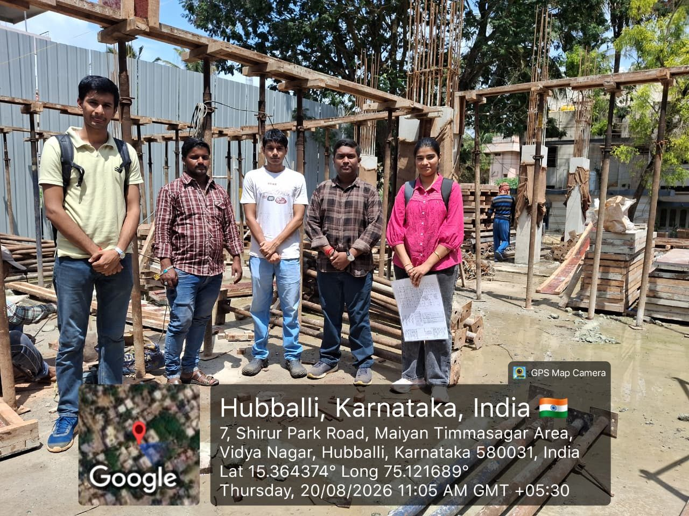
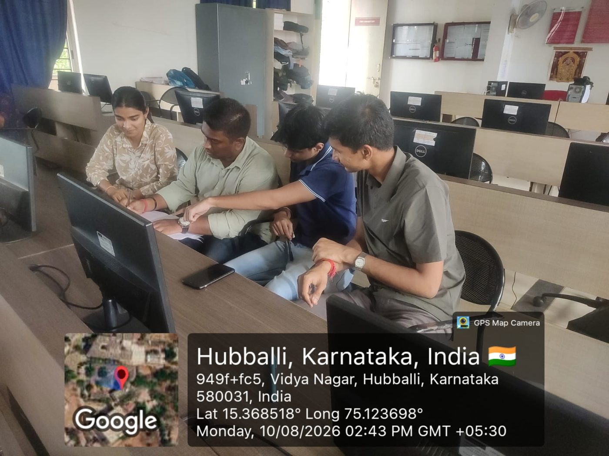

NandishPlan · Check · Pour
Civil engineering student at KLE Technological University. This portfolio follows one simulated project — a seven-block shopping mall on 8 acres with three underground parking levels — from site layout and approvals through materials, survey control, steel and formwork, labour and concrete quality.
About
I am Nandish C. Mudholkar, a civil engineering student. In the Construction Site Management course the class works as the contractor's site team on a shopping mall: seven interconnected blocks on an 8-acre plot, three levels of underground parking and about 12,000 m³ of concrete (preliminary estimate).
Each problem statement asks what a site engineer actually has to decide — which approvals come first, how material enters stock, where benchmarks go, how much steel is wasted, how many workers are needed, and what to do when cubes fail. Every page separates what was observed, what a rule or good practice requires, and what is proposed for the mall.
Topics covered
Course
Construction Site Management
Site visits recorded in PS1 (group)
- Rokhade Castle, Vidyanagar, Hubballi — vertical mixed-use building, ~7,200 sq ft, first-floor centering / formwork stage (20/08/2026)
- Shriya Serenity, Gokul Road, Hubballi — commercial project, ~75,000 sq ft, RERA-approved as recorded in PS1 (21/08/2026)
The six problem statements
PS1 is the group's submitted work. PS2–PS6 build on it; targets and plans in them are proposals, not achieved results.
Site Layout, Approvals & Concrete Supply
Team PS1 baseline: site visits to Rokhade Castle and Shriya Serenity, approvals and RERA, labour welfare under BOCW, and a preliminary own-plant vs RMC comparison with review notes.
Material Procurement, QC, Storage & Accounts
Indent-to-payment workflow, vendor evaluation criteria, receiving and inspection, three-copy invoice control, stores, gates, QC plan and a 15-day readiness plan.
Surveying Plan & Benchmark Control
Pre-survey preparation, control network and benchmarks, consolidated consultant visits, setting-out sequence, QA hold points and in-house checks.
Steel & Formwork Wastage Control
Defined wastage basis, BBS and cutting optimisation, block-wise vs project-wise ordering, reconciliation, member grouping and a ≥ 10-cycle formwork procedure.
Labour Planning & Concrete-Based Manpower
Grade-wise concrete summary, man-day method, block-wise templates, peak/slack management, wage-rate framework and labour contract administration.
Cube Test Failures — Investigation & Prevention
Facts vs hypotheses for 23 of 56 failed column results, containment, evidence register, fishbone and 5-Why, RACI, CAPA and RMC precautions.
From the field
Add the original PS1 site-visit photographs here. Only genuine photos of the visits should be used.


